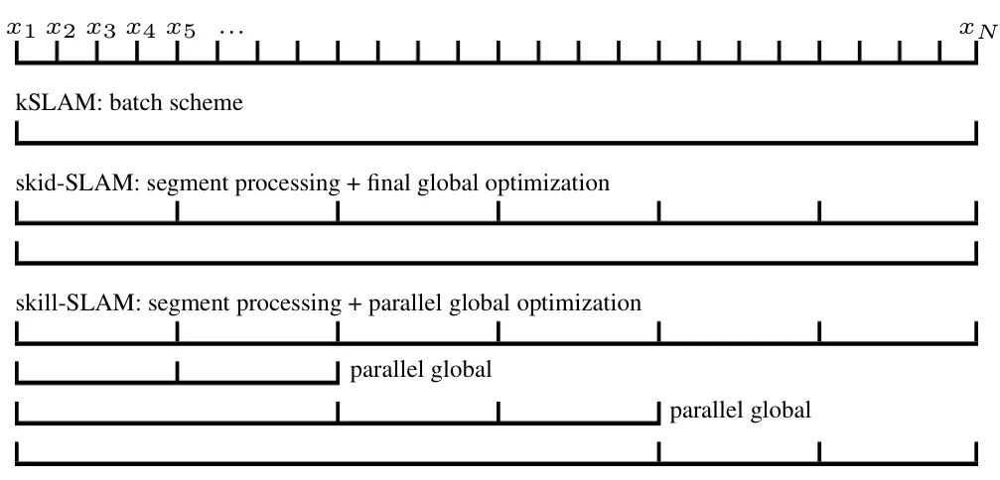
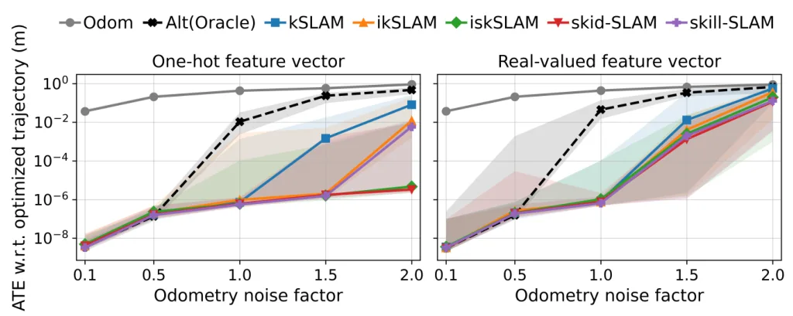
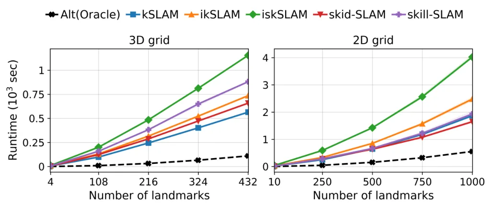
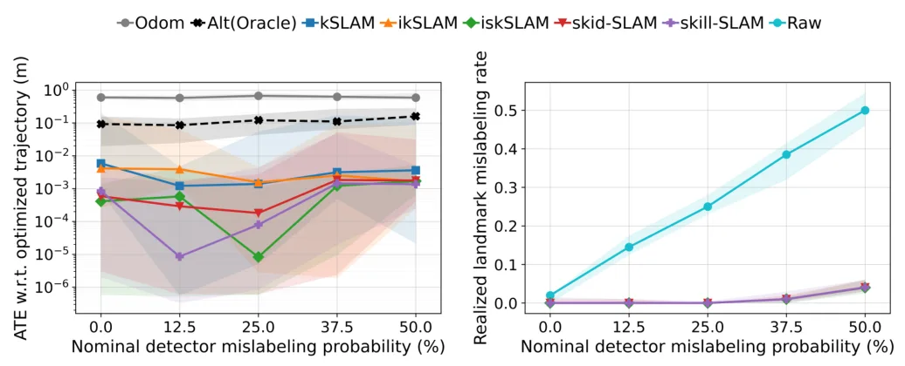
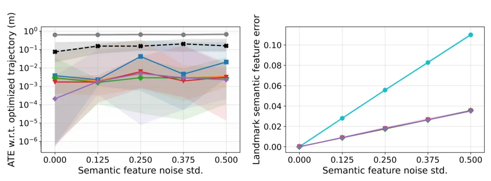
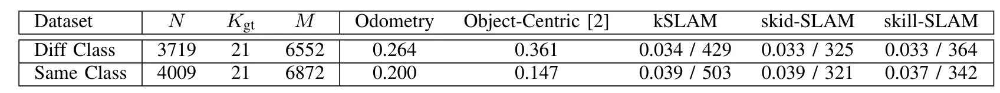

语义半增量无数据关联对象 SLAMSemantic Semi-Incremental Data-Association-Free Object SLAM
直接命中 SLAM 的 data association 与对象级语义估计，问题重要且 Leonard 团队背景可靠；摘要未说明复杂度、关联表示、增量延迟和大规模重复对象下的可扩展性。
一句话工作总结
把数据关联、机器人位姿、对象地标位置与语义放入统一半增量估计框架，并支持类别标签和视觉特征两类语义观测。
摘要
地标观测与地标变量之间的数据关联长期以来一直是 SLAM 的核心难题，因为估计精度高度依赖观测是否关联到正确变量。深度学习使数据关联不仅能利用位置测量，还能利用对象地标语义，例如神经对象检测器的类别标签和视觉 foundation model 的特征向量。本文提出广义 data-association-free SLAM 框架，根据里程计以及地标的位置和语义测量，联合估计数据关联、机器人位姿、地标位置和地标语义。框架建立数据关联与地标语义估计之间的协同关系，采用 semi-incremental estimation 提高精度与计算效率，并为地标数量估计提供原理、指南和 heuristics。方法在合成和真实数据集上以类别标签和实值特征向量两种语义形式评测，摘要报告其优于强基线。
Data association between landmark measurements and landmark variables has long been a central challenge in SLAM, as estimation accuracy depends critically on associating measurements with the correct landmark variables. Recent advances in deep learning have created new opportunities for the problem; data association can now leverage not only positional measurements but also semantic information about object landmarks, such as class labels from neural object detectors and feature vectors from visual foundation models. In this paper, we present a generalized data-association-free SLAM framework that jointly estimates data associations, robot poses, landmark positions, and landmark semantics from odometry, and positional and semantic measurements of landmarks. The proposed framework (i) creates a synergy between data association and landmark semantics estimation; (ii) adopts a semi-incremental estimation scheme for improved accuracy and computational efficiency; and (iii) provides a principled justification, guidelines, and heuristics for landmark-number estimation, improving the interpretability and practical usability of the framework. The proposed framework and algorithms are evaluated on synthetic and real-world datasets with two types of semantic information, class labels and real-valued feature vectors, and demonstrate superior performance compared to strong baselines.
中文解读摘录
- 作者：Yihao Zhang, Jungseok Hong, John J. Leonard
- 价值判断：今天与 SLAM 核心估计问题最直接相关的新作。它不先固定 measurement-to-landmark correspondence，而是联合估计 data associations、robot poses、landmark positions 与 landmark semantics。
- 技术要点：输入包含 odometry、landmark positional measurements 及 semantic measurements；语义既可为 detector class labels，也可为视觉 foundation model 的 real-valued feature vectors。semi-incremental scheme 旨在兼顾精度和计算效率，并给出 landmark-number estimation 的理论依据、指南与 heuristics。
- 结果与边界：摘要称在 synthetic/real-world datasets 上优于 strong baselines。后续应核查组合搜索或松弛形式、增量阶段延迟、重复对象和开放词汇语义下的可辨识性，以及 landmark-number 误估时的一致性。
- 链接：arXiv · PDF
图表/页面预览

{kind=link}

{kind=link}

{kind=link}

{kind=link}

{kind=link}

{kind=link}
